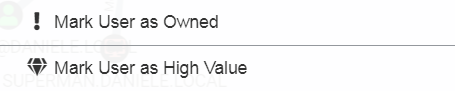

Queries with BloodHound
Now it is time to query the Domain with Bloodhound.
Once we entered in the Bloodhound software, go to:
Now we can choose if make:
◇ Pre-Built Analytics Query
◇ Custom Query
To Hide/Show Labels → CTRL
Once Generated the Graphs by right clicking on a user/group we can mark it as:
◇
because BloodHound may not know that we own a user, BloodHound from this information may find new paths
◇
because
This will help
BloodHound and to generate